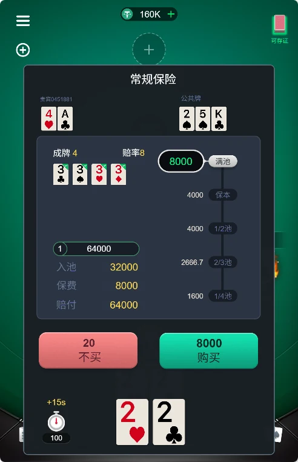
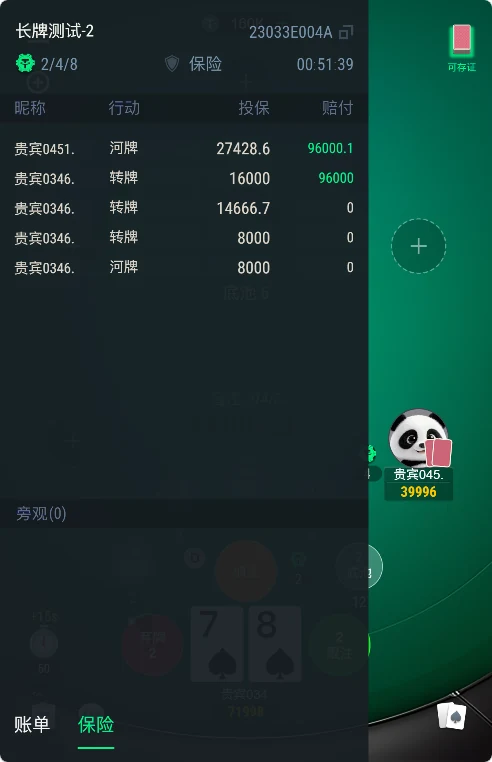
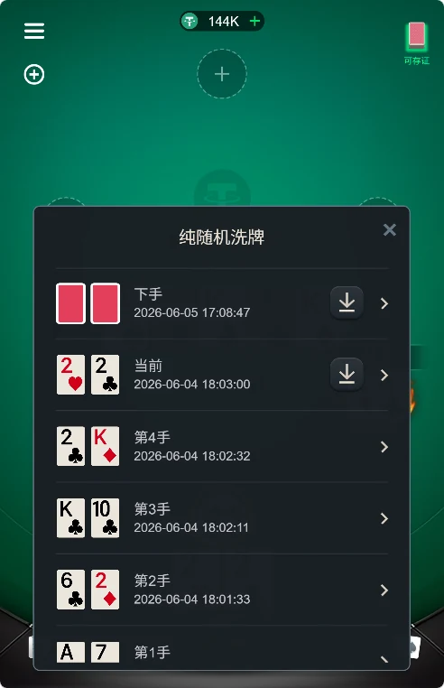

長牌與短牌入口
大廳截圖呈現長牌、短牌分類；公開用戶端包含 shortTexas 場景、協定與控制器，可從短牌模組開始閱讀。
從大廳到牌桌，看懂德州專案的每個環節。
適合評估德州撲克用戶端開發、短牌玩法與俱樂部系統。透過實際畫面及公開程式碼，確認產品流程與客製需求。
洽詢交付範圍 →
大廳截圖呈現長牌、短牌分類；公開用戶端包含 shortTexas 場景、協定與控制器，可從短牌模組開始閱讀。
從房間清單、俱樂部入口到牌局紀錄模組，了解選桌與管理流程。
透過原始截圖評估保險資訊及歷史紀錄的呈現；規則與計算邏輯仍需搭配完整交付驗證。
截圖取自本倉庫 Screencut，保留原始介面及標誌。網頁說明提供三種語言，截圖仍為原始中文，不表示用戶端已完成三語在地化。

長牌、短牌及俱樂部導覽，呈現產品的資訊層級。
座位、公共牌區與操作按鈕，展示行動端牌桌配置。

對照實際畫面，規劃選桌及入桌體驗。

觀察保險相關資訊在牌局中的位置。

查看歷史紀錄頁，評估查閱資訊的體驗。

原檔名為「可存证牌界面」；截圖並非公平性或存證效力的證明。

畫面包含使用者、俱樂部及報表等選單；不代表對應後台原始碼已公開。
目前倉庫展示程式碼與產品資料，不能據此承諾一鍵部署。可確認的公開檔案為 Cocos 風格 JavaScript 用戶端與 Lua 後端模組；原 README 提及的 C++ 核心、Vue 3 / Go 後台及完整資料庫部署文件，需另外核對。
程式碼導覽與交付確認 →瀏覽大廳、牌桌與後台截圖，確認保留及客製的流程。
核對用戶端及後端模組、相依項目、引擎版本與缺少的檔案。
確認可執行展示、建置說明、資料庫腳本、授權範圍與功能驗收紀錄。
倉庫名稱包含 AKpoker，原始截圖中出現 KKPOKER 標誌。這些資訊不足以證明本倉庫是 AKpoker 或 KKpoker 官方原始碼，也不能證明授權、合作或實際採用關係。
本倉庫大廳截圖可見「永旺德州」名稱，並提供長牌、短牌入口、牌桌、保險與管理後台圖片。可用於評估產品流程，但截圖本身不證明品牌權屬、線上版本一致性或完整程式碼交付範圍。
尚未驗證完整建置與部署流程。請先閱讀程式碼導覽，並向維護者確認完整專案、執行相依項目、資料庫與部署說明。
原 README 提及這些玩法，但目前公開檔案不足以驗證其完整可用性。需要這些功能時，請確認對應展示與交付清單。
目前 LICENSE 包含 MIT 授權文字。公開程式碼以該檔案及權利範圍為準；未公開專案、美術、品牌素材及客製服務需另行確認。
{kind=link}
{kind=link}
{kind=link}